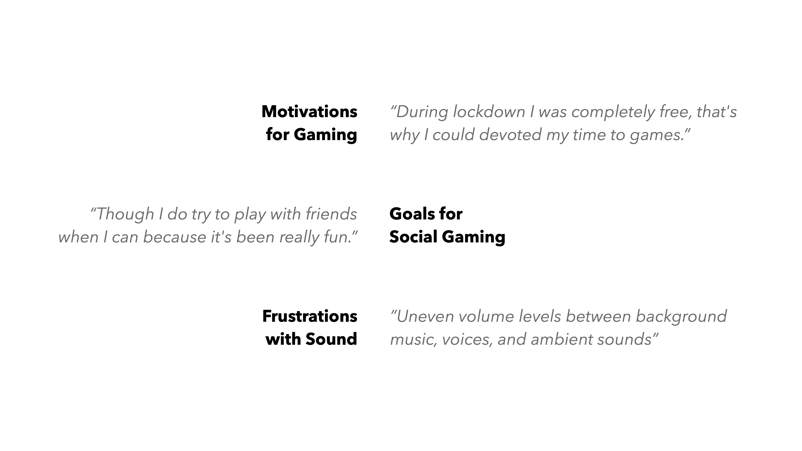
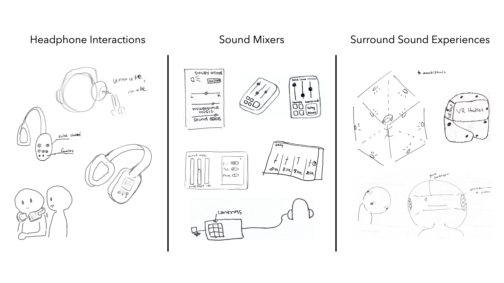

Introduction
In this industry-sponsored project, my team and I were tasked by Dolby Laboratories to research behavior changes among gamers during the COVID-19 pandemic. Research findings informed the design of a digital sound mixer, Dolby Sound Presets. This mixer was designed to be a widget accessed through Windows Game Bar, enabling gamers to adjust their sound settings during gameplay with ease.
Project details
- Role: Project lead
- Date: August 2020
- Duration: 16 weeks
- Team size: 6 members
I worked with five other students throughout this project. As the project lead, I built our project timeline, led user research, and contributed to the final design of our high-fidelity prototype.
Research
Understanding the gaming landscape
We began with a literature review to understand the gaming landscape and identify opportunities to narrow our problem scope. We conducted research in five primary sections: types of gamers, headphone use while gaming, sound enhancing softwares, the video game industry and market, and COVID-19 effects on gaming. To hrough an affinity diagram, we drew connections between our research sections and identified key insights:

Surveying real video gamers
Next, we developed a survey to gather user data. We asked questions regarding solo versus multiplayer gaming, playtime before and during quarantine, emotions when gaming, preferred genres of games, and console and sound preferences.
Over one week, 239 responses poured in. Respondents primary consisted of members of gaming subreddits, Discord users, and personal connections of team members. Here's what we found:
Additionally, the short-answer section of the survey illuminated key user emotions and motivations:

Now that we could put a voice to the behaviors identified through quantitative data, we moved into our next phase of research: talking to real video gamers.
Interviews
We wanted to gain insight from gamers’ first-hand experiences with pandemic gaming behaviors and sound experiences. To do so, we talked to users about their experiences gaming in quarantine, playing with friends, trying new games, changing consoles, gaming with headphones, and using sound enhancing softwares. Through a second affinity diagram, we identified these high-level takeaways:
- Gaming is an emotional experience; sentiments of competition, friendship, belonging, and adventure often made gaming memorable
- Gamers are influenced by their friends’ behaviors
- Multiplayer PC gaming has the most opportunity for sound experience innovation
- Balancing sound is a main pain point when playing with others
Ideation
Individual sketching
With our newly-realized research insights, we moved into open-ended sketching. Our solutions fell in three main categories.

Scoping
As our sketches were quite varied, we created problem statement to scope our future design work. Considering our research insights and sketches, we knew this:
- PC gamers made up the majority of our interview and survey respondents who reported behavior changes
- Balancing audio inputs proved to be the biggest frustration among the gamers we talked to
- Each gamer has their own preferences for sound based on factors like type of game or number of players
These core insights helped us develop our final problem statement:
PC gamers playing online games with their friends need a way to balance the core audio inputs so that they can customize the gaming experience to their sound preferences.
Personas
With our problem statement identified, we developed personas to better understand our target users’ goals and frustrations. These personas aligned with the types of gamers that we interviewed and surveyed, falling into social and serious categories.


Collaborative Sketching
We moved into collaborative sketching to constrain our ideas. Each team member sketched for a few minutes and rotated to the member’s sketch to add features, questions, or comments. In doing this exercise, we considered our personas’ pain points and how to address them.
We found five key features among our sketches:

Blue Sky Sketching
At this point, much of our research and ideation was leaning toward a digital sound mixer. As a team, it was important for us to consider both feasible ideas and blue sky designs. Therefore, we launched into rapid ideation and blue sky sketching to challenge our preconceived notions of sound solutions.
Design